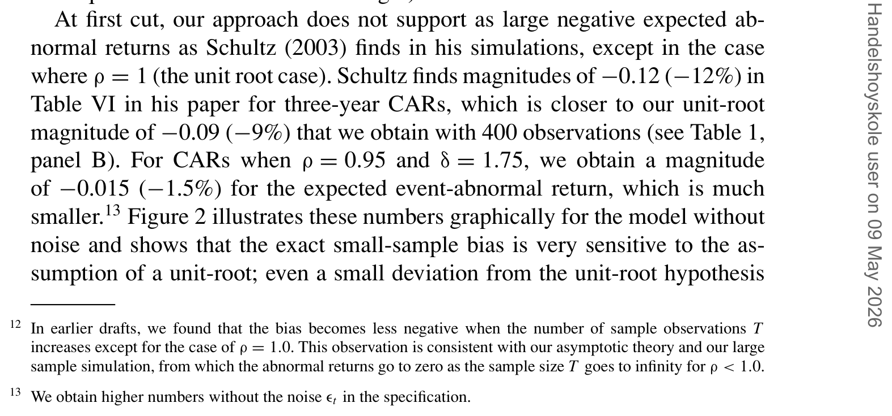
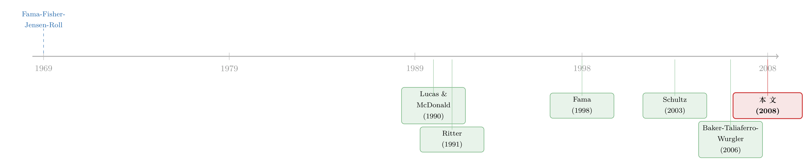

为什么「上市后跌跌不休」可能是一道算术题？
本文读的是 Viswanathan & Wei (2008, Review of Financial Studies)：当「收益反过来预测事件」时，IPO/SEO 之后那段著名的长期负收益，未必是市场无效，而很可能是一种系统性的统计偏差——而且这个偏差的死活，全压在「事件数量」这个时间序列到底是平稳的、还是带单位根的之上。
1 一桩悬案：上市之后，股票为什么「跌跌不休」？
先讲一个金融学里几乎人尽皆知的「丑闻」。
1991 年，Ritter 把一批刚上市的公司拉出来，盯着它们 IPO 之后三五年的表现看，结论很刺眼：这些新股在风险调整后长期跑输大盘。紧接着 Loughran 和 Ritter（1995）把增发新股（SEO）也拉进来，发现同样的「新发行之谜」（new issues puzzle）。再往后，并购后跑输（Loughran & Vijh, 1997）、股利削减后的漂移（Michaely, Thaler & Womack, 1995）、回购后的超额表现（Ikenberry, Lakonishok & Vermaelen, 1995）……一长串「长期异常收益」（long-run abnormal returns）的证据堆了上来，似乎都在指着同一个方向说：市场没那么有效，公司事件之后存在可被预见的错误定价。
这套叙事很性感，因为它直接挑战了从 Fama, Fisher, Jensen and Roll（1969）开创的事件研究范式——那套范式的潜台词是「市场是半强式有效的，偏离很小」。
但是，质疑声也一直都在。Fama（1998）综述了这一大片文献后泼了盆冷水：这些检验的统计功效（power）很低，长期收益的度量充满噪声，所谓的「异常」未必经得起推敲。
故事到这里还停留在「方法论吵架」的层面。真正把这桩悬案推向反转的，是 Schultz（2003）。
2 反转的引信：当「收益反过来预测事件」
Schultz（2003）提出了一个让人后背发凉的概念——伪市场择时（pseudo market timing）。
它的逻辑是这样的。传统事件研究有一条被写进教科书的隐含假设（Campbell, Lo & MacKinlay, 1997, p.157）：事件相对于股价变化是外生的（exogenous）。也就是说，公司什么时候 IPO、什么时候增发，跟它接下来的股价没有「内生」的纠缠。
可现实显然不是这样。一连串公司金融的理论模型都告诉我们，事件恰恰是被收益「勾」出来的：
- Lucas and McDonald（1990）：股价先涨上去，公司才更愿意增发；
- Pastor and Veronesi（2005）：市场行情好的时候，经理人才扎堆把公司推上市；
- Rhodes-Kropf and Viswanathan（2004）：并购浪潮发生在市场被相对高估之时。
这些模型的共同点是：当事件收益更高时，随后发生的事件数量更多。 用本文的术语说，事件是内生的（endogenous）——事件生成过程依赖于过去事件收益的历史。
Schultz 用一个模拟例子说明：当市场水平能预测事件数量时，跨所有模拟平均出来的长期收益是负的。换句话说，哪怕市场完全有效、收益对未来毫无可预测性，你算出来的「长期异常收益」也会是负的。 那段被解读为「市场无效」的负收益，可能压根就是一个统计幻觉。
这正是事件研究里最危险的陷阱：你以为 t 值显著就抓到了因果，其实只是抓到了一个由「事件内生性」喂出来的偏差。关于事件研究里 t 值与因果脱节的一般性问题，可参见《事件研究里的「假阳性」：当一根 t 值不再等于因果》。
但 Schultz 的论证有个软肋：它只是一个模拟。 在什么条件下他的结论成立、又在什么条件下不成立，并不清楚。这正是 Viswanathan 和 Wei 这篇论文要补上的窟窿——他们要给「内生事件下的事件研究」一套严谨的固定样本理论 + 渐进理论。
3 偏差从哪儿来：一道「加权」的算术
先把核心直觉讲透，因为这篇论文真正的贡献就是把这个直觉数学化了。
我们想算的是「平均事件异常收益」。一个先验的、看似公平的想法是：在数据中同等可能出现的所有收益历史，应该被同等加权。 但 Viswanathan 和 Wei 指出，一旦事件是内生的，这个加权就被悄悄扭曲了。
怎么扭曲的？看长期累积异常收益（cumulative abnormal return, CAR）和买入持有异常收益（buy-and-hold abnormal return, BHAR）的定义（论文 Equation 1）：
$$CAR_T(s)=\frac{\sum_{t=1}^{T} N_t\sum_{j=1}^{s}\big((1+r_{IPO,t+j})-(1+E[r_{IPO,t+j}])\big)}{\sum_{t=1}^{T} N_t}$$
$$BHAR_T(s)=\frac{\sum_{t=1}^{T} N_t\Big(\prod_{j=1}^{s}(1+r_{IPO,t+j})-\prod_{j=1}^{s}(1+E[r_{IPO,t+j}])\Big)}{\sum_{t=1}^{T} N_t}$$
这里 \(N_t\) 是 \(t\) 期末的事件数（比如当月 IPO 的家数），分母 \(\sum_t N_t\) 是事件总数。注意：每一期的收益是按当期事件数 \(N_t\) 来加权的，再除以总事件数。
关键就出在这个分母上。当收益高时，随后的事件数 \(N_t\) 更多，于是分母（事件总数）更大，这就把高收益的权重压低了；反过来，当事件数少时，我们又高估了随后那些低收益。一来一回，高收益被系统性地低估、低收益被系统性地高估——异常收益的期望自然就是负的。
这就是论文的第一块基石（Theorem 2）：
在固定样本下，\(E[CAR_T(s)]\le 0\) 且 \(E[BHAR_T(s)]\le 0\)，对任意持有期 \(s\) 都成立。
而且证明这一点不需要对收益或事件数的平稳性做任何假设，只需要一个叫相关（affiliation）的统计条件（Assumption 3）。相关比普通的正相关更强：它要求两个变量的所有正单调变换在任意历史下都正相关。为什么需要这么强的概念？因为事件收益是事件数与 IPO 收益的非线性变换，普通相关性不够用，必须借助 Milgrom and Weber（1982）拍卖理论里的相关概念，才能保证「今天收益高 → 不只是明天、而是更远的将来事件都更多」（Theorem 1）。
接着，一个自然的问题是：持有期越长，偏差会怎样变？ 答案很直接（Theorem 3）：持有期越长，偏差越负。直觉是，长期收益是一串收益的连乘，而一串高收益会勾出更多的未来事件，于是「一串高收益」被低估得比「一串低收益」更狠。这恰好解释了为什么长期事件研究——三年、五年——最容易栽进这个负偏差的坑里。
4 真正关键的一步：平稳，还是单位根？
到这里，Schultz 的「伪市场择时」似乎被坐实了：负收益是统计假象。但 Viswanathan 和 Wei 没有停在这儿——他们追问了一个 Schultz 的模拟回答不了的问题：当样本无限大时，这个偏差会消失吗？
这才是全文的「题眼」。
他们的渐进理论（Section 1.3）用了一个漂亮的工具：克罗内克引理（Kronecker's Lemma）。注意到序列 \(\{N_t r_{t+1}/S_t\}\)（其中 \(S_t=\sum_{i=1}^{t}N_i\) 是累积事件数）相对于历史 \(G_t\) 是一个鞅差序列（martingale difference sequence）——说人话，这就是一个合法的动态交易策略。于是由 \(L^2\) 有界鞅收敛定理，只要
$$\sum_{t=1}^{\infty}E\!\left(\frac{N_t}{S_t}\right)^2<\infty$$
这个矩条件成立，长期异常收益就会几乎必然收敛到零（Theorem 4）。
这个矩条件的经济含义极其关键：
- 如果事件数过程是平稳的（stationary），今天的冲击不会永远留存，超大样本里的事件总数 \(S_T\) 几乎不受今天那一下冲击的影响。于是我们不再系统性地低估高收益、高估低收益——偏差渐进消失。
- 如果事件数过程是非平稳的（nonstationary）、带单位根（unit root），今天的一个冲击会永远留存，事件总数会被今天的收益冲击实实在在地推动——偏差不会消失。
一句话概括这篇论文的灵魂：如果事件数过程是平稳的，长期负收益本质上只是一个小样本问题；要想得到真正巨大的长期负偏差，事件数过程必须是非平稳的。
而且，作者证明 Schultz（2003）那个「motivating example」隐含地假设了事件数过程的非平稳，他的实证工作正是建立在一个单位根设定上。也就是说，Schultz 之所以在模拟里看到持久的负收益，不是因为偏差天生持久，而是因为他偷偷把过程设成了单位根。渐进理论一举把整个争论的焦点，从「市场有没有效」收束到了「事件数序列平不平稳」这个可检验的计量问题上。
5 模型：把一切压进一个对数正态 AR(1)
为了把上面那套抽象理论变成能算数的东西，作者把一般模型特化成一个对数正态模型（lognormal model）。这是全文的引擎，值得一步步拆开看。
设事件数的对数服从如下一阶自回归（论文 Equation 2）：
这里 \(r_t\) 是某个基准调整后的 IPO 指数收益（即超额收益），\(\rho>0,\ \delta>0\)，\(\{r_t\}\) 与 \(\{\epsilon_{t+1}\}\) 都是均值为零的 iid 白噪声。取对数的好处有二：保证事件数恒为正；并且通过调节 \(\rho\) 就能在平稳（\(\rho<1\)）和非平稳（\(\rho=1\)）之间自由切换。
第一步，渐进结果（Corollary 1）。 当 \(\rho<1\) 时，可以验证这个对数正态模型满足 Theorem 4 的矩条件，于是异常收益随样本量 \(T\to\infty\) 收敛到零。平稳，则偏差消失。
第二步，单位根的反例（Corollary 2）。 当 \(\rho=1\) 时，矩条件被破坏。此时期望 CAR 不再收敛到零，而是收敛到一个负常数：
$$E[CAR_T]\ \longrightarrow\ -\frac{\delta\sigma_r^2}{2}$$
这个式子异常清爽，直觉也清楚：\(\delta\) 越大，一个收益冲击对事件数的冲击越大，\(r_t\) 与 \(N_{t-1}/S_T\) 的协方差越负，偏差越深；\(\sigma_r\) 越大，收益越波动、极端值越易出现，同样把偏差推得更负。只有在单位根下，才会出现这种「永不消失」的大负偏差。
第三步，小样本的精确刻画（Theorem 5）。 真实的事件研究样本是有限的（典型如 400 个月度观测）。作者祭出斯坦因引理（Stein's Lemma, Stein 1972），给出对所有 \(\rho\) 都成立的精确期望：
$$E[CAR_T]=-\delta\sigma_r^2\sum_{t=1}^{T-2}\sum_{s=t+2}^{T}\rho^{\,s-t-2}\,E\!\left[\frac{N_t N_s}{\left(\sum_{s=1}^{T}N_s\right)^{2}}\right]<0$$
这个表达式把偏差和两个参数 \((\rho,\delta)\) 的关系彻底说清了：偏差恒为负，且随 \(\rho\) 增大（事件越持久）或 \(\delta\) 增大（收益与事件数的关系越强）而越发负。作者还顺手指出，用 Theorem 5 来模拟收敛极快——100 轮和 10 轮模拟的结果几乎一致，斯坦因方法给出的估计非常精准。
6 数字说话：偏差对单位根「敏感得吓人」
理论再漂亮，也得看量级。作者在 \(T=400\)、\(r_t\sim iid\,N(0,0.0824)\)（标准差取 0.0824 以匹配真实 IPO 数据）下做了模拟，把不同 \((\rho,\delta)\) 组合下的期望 CAR 列了出来。挑几个关键数字：
月度 CAR（Panel A）： - \(\rho=0.95,\ \delta=1.0\)：$-0.000711$ - \(\rho=1.0,\ \delta=1.0\)：$-0.002971$
三年期 CAR（Panel B）： - \(\rho=0.95,\ \delta=1.0\)：$-0.012655$ - \(\rho=1.0,\ \delta=1.0\)：$-0.057739$ - \(\rho=1.0,\ \delta=1.75\)：$-0.099253$
看出门道了吗？从 \(\rho=0.95\) 到 \(\rho=1.0\)，三年期偏差从约 \(-1.3\%\) 猛跳到 \(-5.8\%\)——翻了四倍多。论文的原话是：在 \(\rho=0.95\) 时，偏差的量级大约只有单位根（即 Schultz 2003）情形的八分之一。换句话说，哪怕只是从单位根往回退一点点（0.95 而非 1.0），偏差就断崖式坍塌。 偏差对单位根假设的敏感性，是这篇论文最有冲击力的实证含义。
而在单位根设定下，本文算出的三年期 CAR 量级，与 Schultz（2003）得到的结果相当——这正是为什么他俩能对上号。

Table VI: in his paper for three-year CARs, which is closer to our unit-root
这也带出了一个让人警觉的推论：真正决定你信不信「长期异常收益是真的」的，不是 t 值有多大，而是你愿意相信事件数序列离单位根有多近。 而这恰恰是一个统计功效极低、数据很难分辨的地带。这种「用更长的样本反而买来更大偏差」的味道，与长期预测回归里的小样本幻觉如出一辙（可参见《用更多的数据，买来更大的偏差——长期预测回归里那场小样本幻觉》）。
顺带一提，作者还把模型扩展到允许个体事件异常收益之间存在横截面相关。结论是：即便相关性很小，长期事件收益的标准差也会急剧上升。Mitchell and Stafford（2000）早已指出相关性会抬高标准差，但在内生事件下还多了第二重效应——事件数的持久性进一步放大了标准差。这意味着事件研究里假定的检验size 是错的，长期异常收益的推断「非常嘈杂」。
7 那么，数据到底是平稳还是单位根？
理论把球踢回给了实证：IPO 和 SEO 的事件数过程，究竟有没有单位根？
作者做了单位根检验，结果喜忧参半：
- 只放一个滞后项时，IPO 和 SEO 都能拒绝单位根假设；
- 放更多滞后项时，证据变得模糊——在 1% 水平上无法拒绝单位根，但在 5% 水平上可以拒绝；
- 总体而言，IPO 比 SEO 更难拒绝单位根。
由于单位根检验在滞后阶数较高时功效很低，而原假设又恰恰是单位根，作者诚实地承认：数据无法在「单位根」和「近单位根（near-unit-root）」之间做出区分。 这是个略带遗憾、但极其负责任的结论——它没有强行宣判 Ritter（1991）的异象是真是假，而是把判断的不确定性如实交还给了读者。
8 文献脉络
把这条线索从头捋一遍，会发现它其实是「事件研究方法论」与「公司事件理论」两股水流的汇合。
最上游是 Fama, Fisher, Jensen and Roll（1969）开创的事件研究范式，奠定了「事件外生、市场有效」的基准。Ritter（1991）和 Loughran and Ritter（1995）从长期收益的角度发起挑战，掀起了「长期异象」的浪潮。Fama（1998）以「低功效」为这股浪潮降温，Mitchell and Stafford（2000）则从日历时间回归与横截面相关的角度指出标准误被低估。
另一股水流是公司金融的理论：Lucas and McDonald（1990）、Rhodes-Kropf and Viswanathan（2004）、Pastor and Veronesi（2005）反复论证了「事件由收益内生触发」。

两股水流在 Schultz（2003）的「伪市场择时」处第一次交汇——他用模拟说明内生性会制造负偏差。几乎同时，Baker, Taliaferro and Wurgler（2006）从「用管理层决策变量预测收益是否存在小样本偏差」的角度切入同一问题。而 Viswanathan and Wei（2008）这篇，正是站在这个交汇口上，第一次给出了固定样本 + 渐进的完整理论，并把整场争论锐化成一个干净的计量命题：平稳 vs. 单位根。
9 评论与延伸（Q&A + 研究方向）
(a) 几个可能的疑问
Q：这篇论文是不是「证明了」IPO 长期负收益是假象？
不是，而且作者很克制。它证明的是：在固定样本下负偏差一定存在；但在平稳事件过程下这是小样本问题、会渐进消失，只有在单位根下才会留下大的持久负偏差。最终能不能拒绝单位根，数据说了不算清——所以它没有给 Ritter 的异象「定罪」，只是把举证责任挪到了「事件数序列平不平稳」上。
Q：「相关（affiliation）」和普通的正相关有什么区别，为什么非用它不可？
普通正相关只约束线性关系；相关要求两个变量的所有正单调变换在任意历史下都正相关，是更强的条件。因为事件异常收益是事件数与 IPO 收益的非线性函数，普通相关不足以保证「今天收益高 → 未来各期事件都更多」这种跨期单调依赖，而这恰是负偏差的来源。相关由 Milgrom and Weber（1982）的拍卖理论引入，正好胜任。
Q：为什么偏差会随持有期变长而越来越负？
因为长期收益是一串单期收益的连乘。由相关性，一串连续的高收益会勾出更多的未来事件，使得这串高收益在加权时被压得更低；而一串低收益对应的事件较少、权重相对偏高。持有期越长，「连乘的高收益」被低估得越狠，期望异常收益就越负。
Q：\(\rho=0.95\) 和 \(\rho=1.0\) 差距真有那么大吗？
大到惊人。三年期 CAR 在 \(\delta=1.0\) 下从 \(\rho=0.95\) 的 $-0.0127$ 跳到 \(\rho=1.0\) 的 $-0.0577$，量级差约 4–8 倍。偏差对单位根的敏感性是高度非线性的——这也是为什么「数据难以区分单位根与近单位根」如此致命：差之毫厘，结论谬以千里。
Q：横截面相关那部分为什么重要？
因为它打击的是推断而非点估计。即使个体事件收益间相关性很小，长期事件收益的标准差也会急剧放大；再叠加事件数的持久性，标准差被进一步推高。结果是事件研究里习惯假定的检验 size 失真，所谓「显著的长期异常收益」可能只是被低估的标准误制造的幻觉。
Q：这套理论只适用于 IPO/SEO 吗？
不。模型对事件类型不可知，作者只是拿 IPO 来具体化。任何「收益预测事件、事件数内生」的场景——并购浪潮、回购潮、股利变动——原则上都适用。换言之，凡是事件数会随行情起落的长期事件研究，都得先问一句：我的事件计数序列，平稳吗？
(b) 几个可能的研究问题与提案
1. 把「平稳 vs. 单位根」检验搬到公司债的发行潮里
【经济故事】公司债的发行高度顺周期：信用利差收窄、利率走低时，发行扎堆。如果发行数量序列带单位根，那么「新发债券长期跑输/跑赢」的研究可能正落进本文揭示的陷阱。 【可行性】中。Mergent FISD / TRACE 提供逐月发行计数与二级市场收益，单位根检验现成可做。难点在于发行计数常有结构性断点（如金融危机、QE），需要配合带断点的单位根检验，否则容易把趋势误判为单位根。
2. 外资持有人潮汐是否也是「内生事件」？
【经济故事】跨境资金的流入往往跟在一段高收益之后——行情好，外资来；外资来，又被解读为利好。若把「外资进入某市场/某券」当作事件，其计数序列很可能内生于前期收益，从而给「外资进入后的长期收益」研究埋下同样的加权偏差。 【可行性】中。需要券级或国别级的外资持仓面板（如 EPFR、各国托管数据）。识别上可借本文框架先检验持仓变动计数的平稳性；真正的难点是外资流入与基本面改善的内生纠缠，单纯的偏差校正未必能分离两者。
3. 用本文的精确公式给已发表的长期异象做一次「偏差体检」
【经济故事】Theorem 5 给出了 \((\rho,\delta)\) 到偏差的解析映射。原则上，可以对文献里每一个长期事件异象，先估出其事件数序列的 \(\rho\) 与收益-事件弹性 \(\delta\)，再代入公式算出「纯偏差」基准，看看扣掉偏差后还剩多少。 【可行性】高。这是一个纯方法论复刻 + 大样本扫描的工作，数据都是公开的事件数据库，计算量可控。诚实地说，结论会高度依赖 \(\rho\) 的估计精度，而这恰是数据最说不清的地方——所以更像是「给异象标注一个偏差不确定区间」，而非一锤定音。
4. 流动性事件研究里的隐藏内生性
【经济故事】很多流动性研究会围绕「流动性骤降事件」做事后收益分析。但流动性冲击的发生频率本身可能内生于前期收益（跌得多→抛压大→流动性事件多）。本文框架提示：这类计数若非平稳，长期收益估计同样有偏。 【可行性】中。公司债 TRACE 数据可构造流动性事件计数，平稳性检验可做（关于公司债流动性度量，可参见《把「成交价」从「成交量」里解放出来——重新丈量公司债的流动性》）。难点是「流动性事件」的定义本身带主观性，会影响计数序列的时序性质。
我的判断
这篇论文的贡献是把一场吵了十几年的方法论争论，收敛成了一个可检验的计量命题。Schultz（2003）靠模拟给出直觉，Viswanathan 和 Wei 则用相关性、克罗内克引理、斯坦因引理三件趁手的数学工具，把「负偏差一定存在」「平稳则渐进消失」「单位根则永久留存」逐层证成定理。尤其 Theorem 5 那个解析表达式，第一次让人能精确地量化偏差对 \((\rho,\delta)\) 的依赖——这是从「我觉得有偏差」到「偏差是这么大」的质变。
对识别的担忧也很坦白，作者自己就点破了：整套结论的实证落地，卡在单位根检验的低功效上。 数据无法区分单位根与近单位根，意味着这篇论文给出的更多是一种「警示框架」而非「最终裁决」——它教会我们该问什么问题（事件计数平稳吗？），却没法替我们回答这个问题。此外，模型把收益设成 iid 白噪声、把依赖结构简化成一阶马尔可夫，虽然作者声称可以放松，但真实世界里收益的自相关、波动率聚集、事件计数的季节性与结构断点，都可能让「平稳/单位根」这个二分法变得更暧昧。
后续我最想看到的，是把这套偏差校正真正嵌进一个具体市场的长期收益估计里，并诚实地报告校正后异象的「存活区间」——而不是停留在模拟参数空间。尤其在公司债与外资持有这些发行/流动高度顺周期的领域，这个框架的现实意义可能比在 IPO 里更大。
参考文献
Baker, M., R. Taliaferro, and J. Wurgler (2006). Predicting Returns with Managerial Decision Variables: Is There a Small-Sample Bias? Journal of Finance 61(4), 1711–1730.
Campbell, J. Y., A. W. Lo, and A. C. MacKinlay (1997). The Econometrics of Financial Markets. Princeton, NJ: Princeton University Press.
Fama, E. F. (1998). Market Efficiency, Long-Term Returns, and Behavioral Finance. Journal of Financial Economics 49(3), 283–306.
Fama, E. F., L. Fisher, M. C. Jensen, and R. Roll (1969). The Adjustment of Stock Prices to New Information. International Economic Review 10(1), 1–21.
Ikenberry, D., J. Lakonishok, and T. Vermaelen (1995). Market Underreaction to Open Market Share Repurchases. Journal of Financial Economics 39(2–3), 181–208.
Loughran, T., and J. R. Ritter (1995). The New Issues Puzzle. Journal of Finance 50(1), 23–52.
Loughran, T., and A. M. Vijh (1997). Do Long-Term Shareholders Benefit From Corporate Acquisitions? Journal of Finance 52(5), 1765–1790.
Lucas, D., and R. McDonald (1990). Equity Issues and Stock Price Dynamics. Journal of Finance 45(4), 1019–1043.
Michaely, R., R. Thaler, and K. Womack (1995). Price Reactions to Dividend Initiations and Omissions: Overreaction or Drift? Journal of Finance 50(2), 573–608.
Milgrom, P. R., and R. Weber (1982). A Theory of Auctions and Competitive Bidding. Econometrica 50(5), 1089–1122.
Mitchell, M. L., and E. Stafford (2000). Managerial Decisions and Long-Term Stock Price Performance. Journal of Business 73(3), 287–329.
Pastor, L., and P. Veronesi (2005). Stock Prices and IPO Waves. Journal of Finance 60(4), 1713–1757.
Rhodes-Kropf, M., and S. Viswanathan (2004). Market Valuation and Merger Waves. Journal of Finance 59(6), 2685–2718.
Ritter, J. R. (1991). The Long-Run Performance of Initial Public Offerings. Journal of Finance 46(1), 3–27.
Schultz, P. (2003). Pseudo Market Timing and the Long-Run Underperformance of IPOs. Journal of Finance 58(2), 483–517.
Stein, C. M. (1972). A Bound for the Error in the Normal Approximation to the Distribution of a Sum of Dependent Random Variables. Proceedings of the Sixth Berkeley Symposium on Mathematical Statistics and Probability 2, 583–602.
Viswanathan, S., and B. Wei (2008). Endogenous Events and Long-Run Returns. Review of Financial Studies 21(2), 855–888.